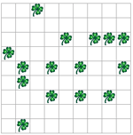

Schreiben Sie ein Programm, das fünfzehn Kleeblätter an zufälligen Koordinaten in der Welt platziert. Es sollen fünfzehn Kleeblätter platziert werden, auch wenn zufälligerweise die gleiche Koordinate zwei Mal vorkommen würde.
Sie können mit dem Befehl tools.random(n) eine Zufallszahl im Bereich 0..n (bis und mit n) erzeugen. Die Grösse der Welt können Sie mit world.getSizeX() bzw. world.getSizeY() abfragen.
Testen Sie Ihr Programm an Welten verschiedener Grössen, und variieren Sie auch die Anzahl zu regnender Kleeblätter.